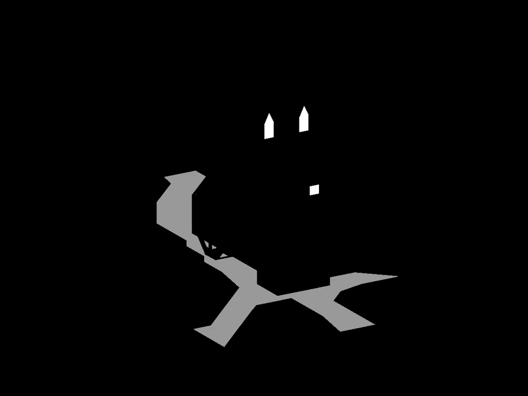

屏幕空间折射，
就像
屏幕空间反射，
能为画面增添其他地方难以呈现的真实感。
玻璃、塑料、水和其他透明/半透明材质会栩栩如生。
屏幕空间反射
和屏幕空间折射的实现几乎完全相同，唯一区别在于。
屏幕空间反射使用反射向量，
而屏幕空间折射使用
折射向量。
代码改动细微，但视觉效果差别明显。
和 SSAO 一样，你需要视图空间中的顶点位置。
详情请参阅 SSAO。
不过，
不同于 SSAO，
你需要场景中包含折射物体和去除折射物体两种状态下的顶点位置。
折射表面是半透明的，意味着你可以透过它看到背后的东西。
既然能看到背面，就必须获取折射表面背后的顶点位置。
同时拥有前景和背景顶点位置，才能计算出 UV 坐标和深度。
计算折射时，你需要视图空间中场景前景的顶点法线。
除非你想在计算折射 UV 坐标和距离时加入背景表面细节，
否则不需要背景顶点法线。
详情请参阅 SSAO。
上图展示了水面折射光线时，有无法线贴图的差别。
如果有法线贴图，一定要用法线贴图中的法线替代顶点法线。
表面越平滑越平坦，折射的光线变化越不明显。
会有一些形变，但不明显时没必要使用。
若使用法线贴图，
你需要像光照计算中那样，
将法线贴图中的切线空间法线转换到视图空间。
可以参见 normal.frag
的实现。
和
SSAO 以及 屏幕空间反射 一样，
屏幕空间折射需要在屏幕空间和视图空间之间来回转换。
你需要相机镜头的投影矩阵，将视图空间点转换到裁剪空间。
从裁剪空间再转换到 UV 空间。
一旦进入 UV 空间，
你就能采样场景中的顶点或片元位置，
这表示离当前采样点最近的场景位置。
这就是“屏幕空间折射”中“屏幕空间”的含义，
因为“屏幕”就是映射在屏幕矩形上的二维纹理。
记住，UV 坐标的 U 和 V 都是从 0 到 1 之间。
屏幕就是一个映射在屏幕矩形上的二维纹理。
基于此，示例代码其实不需要最终渲染的场景就能计算折射。
它可以直接计算每个屏幕像素最终使用的 UV 坐标。
计算出的 UV 坐标可以保存到帧缓冲纹理，
然后在场景渲染完成后使用。
折射 UV 坐标的计算过程和
反射 UV
坐标
非常相似。
下面是从反射转换到折射需要做的调整。
// ...
uniform sampler2D positionFromTexture;
uniform sampler2D positionToTexture;
uniform sampler2D normalFromTexture;
// ...反射只涉及反射表面前方的物体。
折射则涉及折射表面背后的物体。
为此，你需要两个场景的顶点位置：
包含折射物体的场景和去除折射物体的场景。
positionFromTexture 是包含折射物体的场景顶点位置。
positionToTexture 是去除折射物体的场景顶点位置。
normalFromTexture 是包含折射表面的场景顶点法线。
通常不需要折射表面背后的法线，除非你想把背景细节也考虑进折射。
// ...
uniform vec2 rior;
// ...折射比反射多了一个调节参数。
rior 是相对折射率（相对折射指数）。
它是两个介质折射率的比值。
例如，从水到空气是 1 / 1.33 ≈ 0.75。
分子是光线离开的介质折射率，
分母是光线进入的介质折射率。
rior 为 1 表示光线直接穿过，无折射或偏折。
随着 rior 增大，折射效果会趋近于
全反射。
rior 不必严格遵守现实物理。
演示中用了 1.05。
这不现实（光不会在水中比空气中快），
但现实设置会产生过多瑕疵。
最终，只需效果可信即可，不必完全真实。

rior 大于 1 时，折射会被拉长；
小于 1 时，折射会被缩短。
和屏幕空间反射一样，
屏幕空间没有完整的场景几何信息。
折射射线可能在屏幕空间内行进，但永远没击中捕获的表面，
或者击中了摄像机不可见的表面背面。
反射时，遇到这种情况片元会留空。
表示无反射或信息不足。
空白片元对反射来说没问题，因为反射表面会填充空白。
但折射必须给片元赋予 UV。
若留空，折射表面会出现空洞，透出背后的细节。
这对完全透明的表面没问题，但通常折射表面会带有色彩、反射等。
// ...
vec2 texSize = textureSize(positionFromTexture, 0).xy;
vec2 texCoord = gl_FragCoord.xy / texSize;
vec4 uv = vec4(texCoord.xy, 1, 1);
// ...最佳方案是把 UV 设为 rior 为 1 时的值。
这会保持 UV 坐标不变，
让背景内容显示，而不会出现折射表面空洞。
这是磨坊场景的折射 UV 贴图。
轮子和水道扰乱了原本平滑的梯度，
将 UV 坐标从屏幕位置偏移到折射屏幕位置。
// ...
vec3 unitPositionFrom = normalize(positionFrom.xyz);
vec3 normalFrom = normalize(texture(normalFromTexture, texCoord).xyz);
vec3 pivot = normalize(refract(unitPositionFrom, normalFrom, rior.x));
// ...最关键的区别是折射向量和反射向量的计算。
两者都用单位位置和法线，但 refract
需要额外的相对折射率参数。
// ...
frag += increment;
uv.xy = frag / texSize;
positionTo = texture(positionToTexture, uv.xy);
// ...用 uv 坐标采样 positionToTexture 得到
positionTo。
反射时，只需要一个包含视图空间顶点位置的帧缓冲纹理。
而折射时，positionToTexture
是去除折射表面的顶点位置，
因为折射光线通常穿过折射表面到达背后。
如果 positionFromTexture 和 positionToTexture
一样，
折射射线会撞到折射表面本身，而非背后的物体。

你需要一个遮罩来筛选出非折射部分。
该遮罩决定哪些片元接收折射颜色，哪些不接收。
你可以在折射 UV 计算阶段使用遮罩，或在实际采样折射颜色时使用。
磨坊场景使用模型的材质高光作为遮罩。
演示中用高光贴图足够，但你可能想用更专用的贴图。
详情请参考屏幕空间反射中如何渲染高光贴图。

你需要渲染折射物体背后的场景部分。
这可以通过隐藏折射物体，然后将场景渲染到帧缓冲纹理实现。
// ...
uniform sampler2D uvTexture;
uniform sampler2D refractionMaskTexture;
uniform sampler2D positionFromTexture;
uniform sampler2D positionToTexture;
uniform sampler2D backgroundColorTexture;
// ...渲染实际折射或前景颜色时，
你需要折射 UV 坐标、折射遮罩、前景和背景顶点位置，
以及背景颜色。
// ...
vec3 tintColor = vec3(0.27, 0.58, 0.92, 0.3);
float depthMax = 2;
// ...tintColor 和 depthMax 是可调参数。
tintColor 用于给背景颜色着色。
depthMax 范围从 0 到无穷大。
当前景和背景位置的距离达到 depthMax，
前景颜色为完全着色的背景色。
距离为 0 时，前景为背景色。
// ...
vec2 texSize = textureSize(backgroundColorTexture, 0).xy;
vec2 texCoord = gl_FragCoord.xy / texSize;
vec4 uv = texture(uvTexture, texCoord);
vec4 mask = texture(maskTexture, texCoord);
vec4 positionFrom = texture(positionFromTexture, texCoord);
vec4 positionTo = texture(positionToTexture, uv.xy);
vec4 backgroundColor = texture(backgroundColorTexture, uv.xy);
if (refractionMask.r <= 0) { fragColor = vec4(0); return; }
// ...获取 uv 坐标、遮罩、背景位置、前景位置和背景颜色。
如果折射遮罩关闭，则不渲染该片元。
// ...
float depth = length(positionTo.xyz - positionFrom.xyz);
float mixture = clamp(depth / depthMax, 0, 1);
vec3 shallowColor = backgroundColor.rgb;
vec3 deepColor = mix(shallowColor, tintColor.rgb, tintColor.a);
vec3 foregroundColor = mix(shallowColor, deepColor, mixture);
// ...

计算前景和背景位置间的深度或距离。
深度为 0 时，前景颜色为浅色（背景色）。
深度达到 depthMax
时，前景颜色为深色（着色后的背景色）。
深色是将背景色按 tintColor 进行着色的结果。
// ...
fragColor = mix(vec4(0), vec4(foregroundColor, 1), uv.b);
// ...回想一下，折射 UV 纹理的蓝色通道存储了可见度。
当折射射线指向摄像机时，可见度会降低。
虽然可见度应始终为 1，这里保留是为了完整性。
可见度降低时，片元颜色接收的前景颜色也会相应减少。
(C) 2019 David Lettier
lettier.com